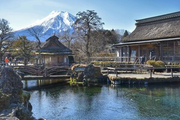
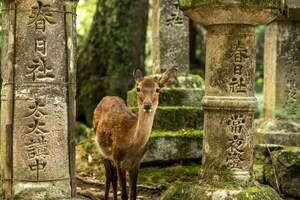
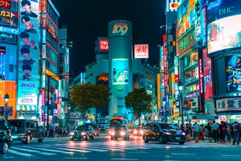
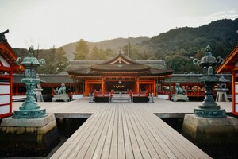

Tours our organize

March 3- March 30
This is one of Japan's most famous hot spring regions. Formed by volcanic activity, this area offers visitors a relaxing thermal experience and hot spring culture with its healing hot springs, traditional ryokan accommodations, and natural landscapes. We offer you the opportunity to relax on this tour, which is organized every year in March.
Read More
April 19- May 19
Established in 1880, this historic park is famous for its hundreds of free-roaming sika deer. These deer, considered sacred in Shinto belief, are protected within the park, and visitors can feed them with special crackers. The park also houses UNESCO World Heritage sites such as Tōdai-ji and Kasuga Taisha. We organize tours to this beautiful park every April and May.
Read More
Every tour
Shibuya Crossing is Tokyo's most famous, busiest, and iconic pedestrian crossing. Known as Scramble Crossing, when the green light comes on, all vehicular traffic stops, and thousands of people cross in all directions simultaneously. This organized chaos symbolizes Tokyo's modern face and is used by hundreds of thousands of pedestrians every day.
Read More
June 10- July 20
Located in Kyoto, Japan, it is one of the most important Shinto shrines, famous for its thousands of orange torii gates. Founded in 711, the shrine is dedicated to Inari, the god of fertility, rice, and business success. Situated at the foot of Mount Inari, it is known for its distinctive fox sculptures.
Read MoreWe want to improve our tours.
It is planned to be done after the arrangements are made.